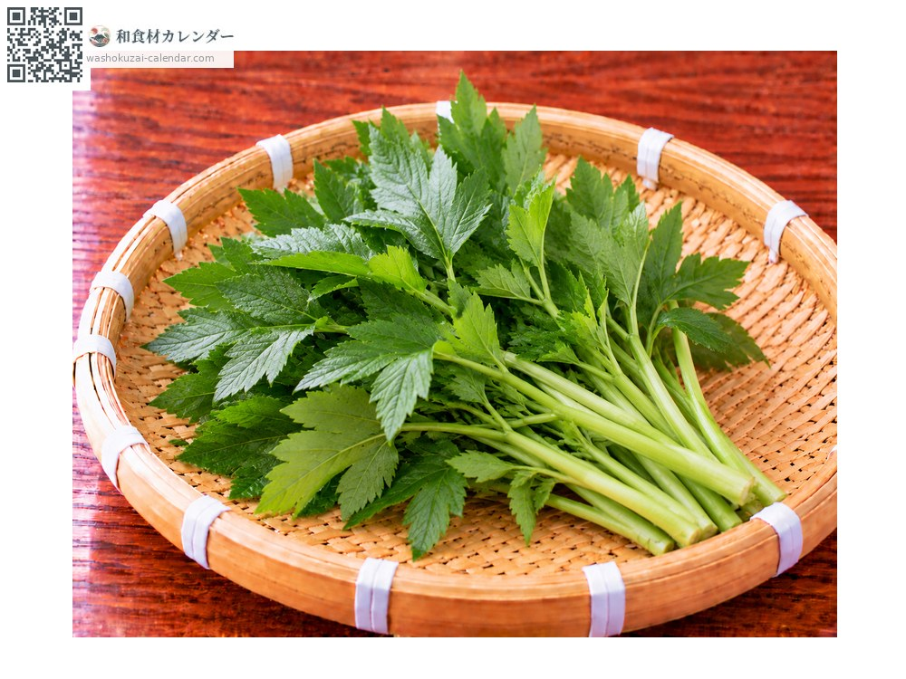
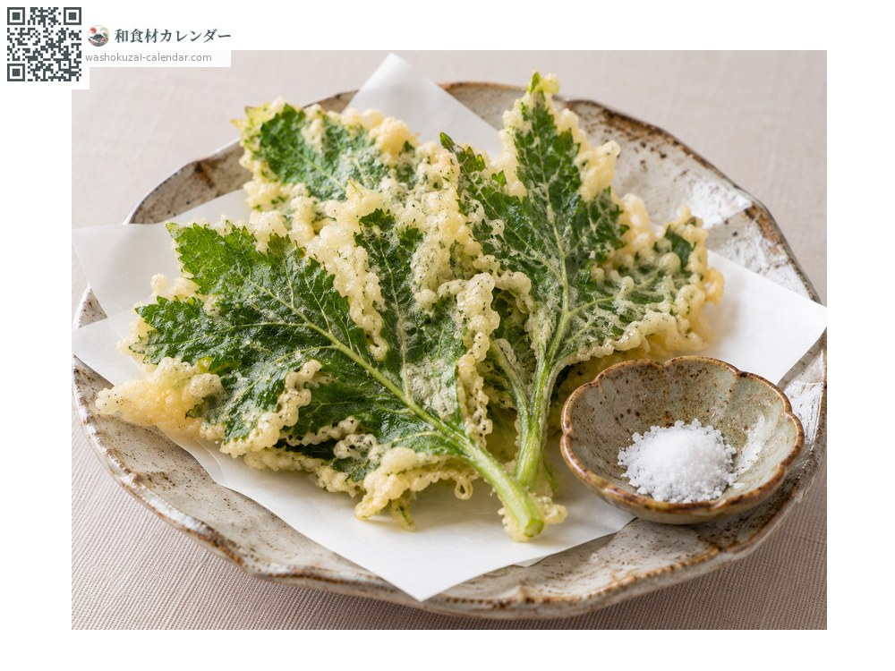
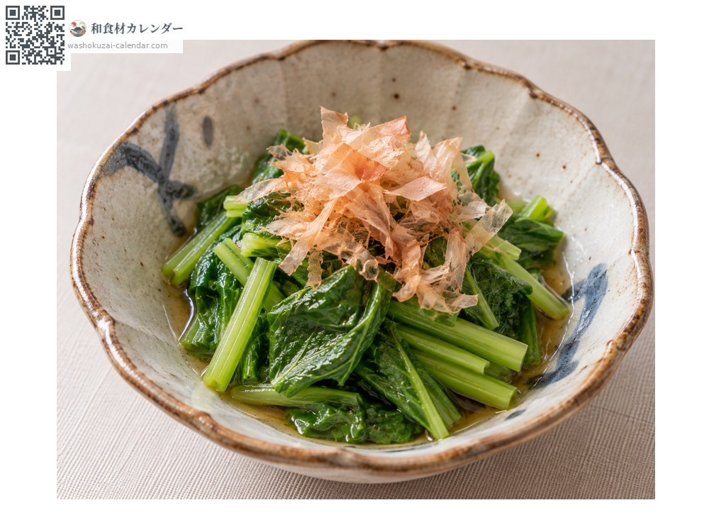
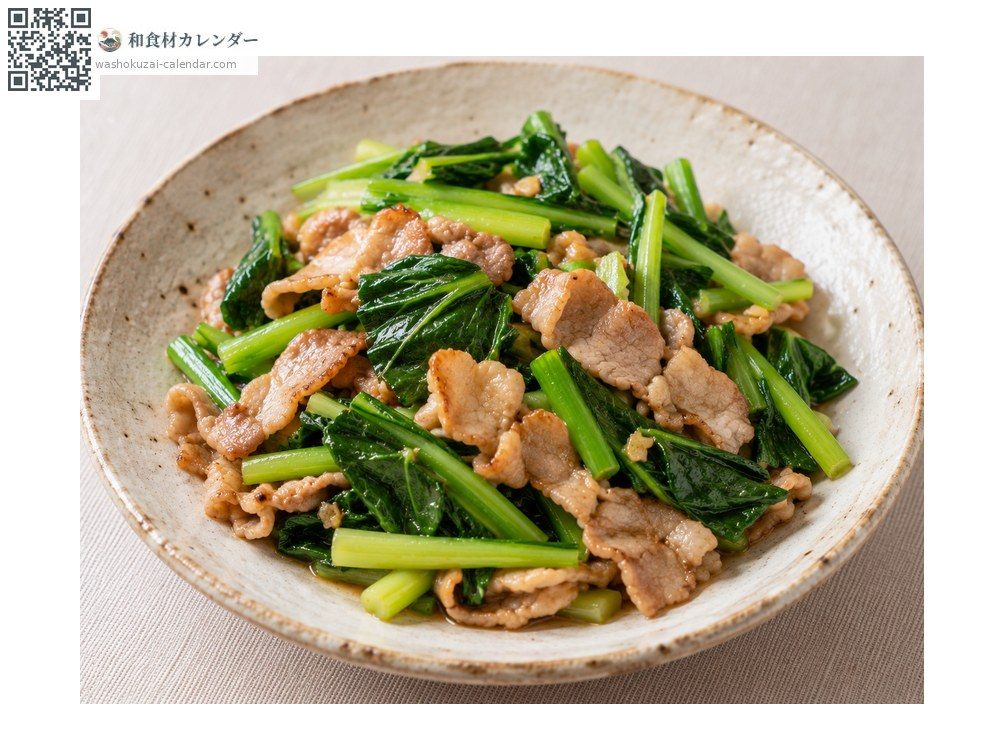
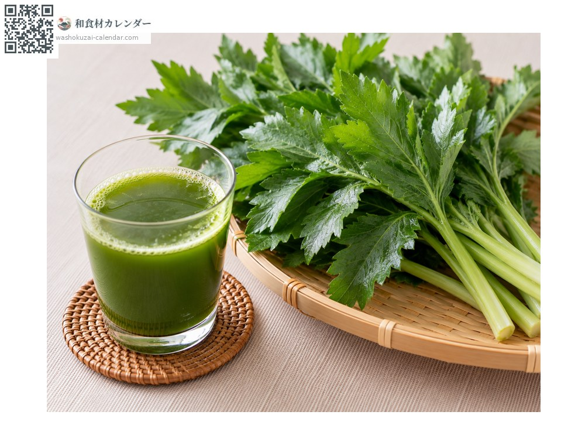

蔬菜
明日葉
明日葉 あしたば ashitaba
別名ashitaba
當令時期為3月、4月、5月

當令時期
1月
2月
3月
4月
5月
6月
7月
8月
9月
10月
11月
12月
當令有供應
料理方式

天婦羅
把葉子攤開油炸，苦味會變柔和、香氣更突出。

燙青菜
快速汆燙後浸在高湯裡，獨特的香氣依然留存。

熱炒
與油很相配，苦味會變得溫和。

青汁
把葉子榨汁，以健康食材聞名。
挑選方式
葉子深綠而厚實、莖粗壯結實。切口流出黃色汁液的就是新鮮的。
保存方式
用濕紙包好直立冷藏，兩到三天內用完。
主要產地
小知識
名字來自它旺盛的生命力：今天摘了，明天就會冒出新芽。野生於伊豆群島與房總半島的海岸，以八丈島的特產聞名。切開莖時流出的黃色汁液含有多酚。